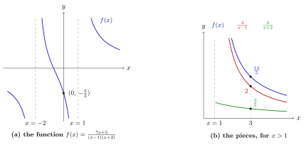
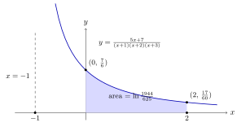
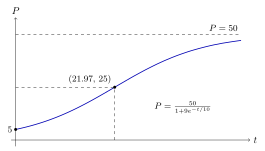

8.5 Partial Fractions¶
Guiding question
A rational function is a quotient of two polynomials. The integral \(\int\frac{7x+5}{(x-1)(x+2)}\,dx\) cannot be found by a substitution or by parts, yet it is easy once we notice that \(\frac{7x+5}{(x-1)(x+2)}=\frac4{x-1}+\frac3{x+2}\): each piece is a logarithm. The method of partial fractions undoes the addition of fractions that you learned in algebra. This section answers three questions. Can it always be done? Yes (Theorem 8.5.5), and the decomposition is unique; the proof uses only the division of polynomials, and one fact about real polynomials, proved in Appendix L (Theorem L.2). How do we find the numerators? By equating coefficients, by substituting numbers, and by the cover-up shortcut (Theorem 8.5.6). How do we integrate the pieces? The linear pieces give powers and logarithms; the quadratic pieces give a logarithm and an inverse tangent, and repeated quadratic factors need the reduction formula of Section 8.4 (Theorem 8.5.9). The last part of the section shows when a substitution turns an integral that is not rational into one that is.
By the end of this section you should be able to:
-
divide first when the numerator has degree at least that of the denominator, and say why (Theorem 8.5.2);
-
write the form of the partial fraction decomposition for each of the four kinds of factor (distinct linear, repeated linear, irreducible quadratic, repeated irreducible quadratic) and say why that form always works and is unique;
-
find the unknown numerators by equating coefficients, by substituting values, by the cover-up method and by the derivative trick, and know when each is quicker;
-
integrate \(\frac A{(x-r)^n}\) and \(\frac{Bx+C}{(x^2+bx+c)^n}\), separating the logarithm from the inverse tangent, and use the reduction formula for \(n\ge2\);
-
evaluate definite integrals of rational functions and check the sign and size of the answer;
-
recognize when partial fractions are not needed, and when a substitution such as \(u=e^x\) makes an integrand rational;
-
check every antiderivative by differentiating it.
The idea¶
In algebra, \(\frac4{x-1}+\frac3{x+2}=\frac{4(x+2)+3(x-1)}{(x-1)(x+2)}=\frac{7x+5}{(x-1)(x+2)}\). To integrate the right side we must run this backward. Each term on the left is a case of \(\int\frac{dx}{x-r}=\ln\lvert x-r\rvert+C\) (the table of Section 8.1), so the whole integral is immediate. Figure 1 shows what the decomposition means: the graph of the rational function is the sum of the graphs of its pieces.
Example 8.5.1: The idea: undoing the addition of fractions
Evaluate \(\displaystyle\int\frac{7x+5}{(x-1)(x+2)}\,dx\).
Solution. Look for numbers \(A\) and \(B\) with
Multiply both sides by \((x-1)(x+2)\) (allowed for \(x\ne1,-2\)): \(7x+5=A(x+2)+B(x-1)\). This is true for all \(x\ne1,-2\), and both sides are polynomials, so it is true for every \(x\) (both sides have degree at most \(1\), and two such polynomials that agree at more than one point are the same polynomial). Put \(x=1\): \(12=3A\), so \(A=4\). Put \(x=-2\): \(-9=-3B\), so \(B=3\). Check by adding back: \(4(x+2)+3(x-1)=7x+5\). Then
Check. \(\frac d{dx}\left(4\ln\lvert x-1\rvert+3\ln\lvert x+2\rvert\right)=\frac4{x-1}+\frac3{x+2}=\frac{7x+5}{(x-1)(x+2)}\).

Figure 1. (a) The function \(f(x)=\frac{7x+5}{(x-1)(x+2)}\) (blue) with its vertical asymptotes \(x=-2\) and \(x=1\) (dashed); the graph is cut off at \(y=\pm5\). (b) For \(x>1\), the graph of \(f\) (blue) is the sum of the graphs of its partial fractions \(\frac4{x-1}\) (red) and \(\frac3{x+2}\) (green); at \(x=3\) the heights are \(2\) and \(\frac35\), and \(\frac42+\frac35=\frac{13}5\). Near \(x=1\) the red piece blows up and the green one stays small; near \(x=-2\) the roles are reversed. That is why each numerator can be found by looking at one asymptote at a time.
Step 0: divide when the numerator is too large¶
A proper rational function \(\frac PD\) has \(\deg P<\deg D\); otherwise it is improper. Adding fractions never produces an improper term out of proper ones, so an improper function must first be split into a polynomial plus a proper function. That is the division of polynomials.
Theorem 8.5.2: Division of polynomials
Let \(N\) and \(D\) be polynomials with \(D\ne0\). There are polynomials \(Q\) and \(R\), with \(\deg R<\deg D\) (or \(R=0\)), such that \(N=QD+R\). They are unique. In particular, if \(\deg N\ge\deg D\) then \(\deg Q=\deg N-\deg D\), and
Proof. Existence, by induction on \(\deg N\). If \(N=0\) or \(\deg N<\deg D\), take \(Q=0\) and \(R=N\). Suppose \(\deg N=n\ge d=\deg D\) and that the claim holds for all numerators of smaller degree. Let \(\alpha x^n\) and \(\delta x^d\) be the leading terms of \(N\) and \(D\) (\(\delta\ne0\)). The polynomial \(N_1=N-\frac\alpha\delta x^{n-d}D\) has no \(x^n\) term (the two leading terms cancel), so \(\deg N_1<n\). By the induction hypothesis \(N_1=Q_1D+R\) with \(\deg R<d\). Then \(N=\left(Q_1+\frac\alpha\delta x^{n-d}\right)D+R\).
Uniqueness. If \(N=QD+R=Q'D+R'\) with \(\deg R,\deg R'<d\), then \((Q-Q')D=R'-R\). The right side has degree less than \(d\). If \(Q\ne Q'\) the left side has degree \(\deg(Q-Q')+d\ge d\), which is impossible. So \(Q=Q'\), and then \(R=R'\). The degree of \(Q\) follows from the construction (each step lowers the degree of the numerator, and the first step contributes the term \(\frac\alpha\delta x^{n-d}\) of highest degree). Dividing \(N=QD+R\) by \(D\) gives \(\frac ND=Q+\frac RD\). ◻ ∎
The algorithm in the proof is long division: at each step remove the leading term. A quotient polynomial integrates term by term, so only \(\frac RD\) needs partial fractions.
Example 8.5.3: Division first
Evaluate \(\displaystyle\int\frac{x^3+2x^2-6}{x^2-x-2}\,dx\).
Solution. The numerator has degree \(3\ge2\), so divide. First term: \(x^3\div x^2=x\), and \(x\,(x^2-x-2)=x^3-x^2-2x\). Subtract: \((x^3+2x^2-6)-(x^3-x^2-2x)=3x^2+2x-6\). Next term: \(3x^2\div x^2=3\), and \(3(x^2-x-2)=3x^2-3x-6\). Subtract: \((3x^2+2x-6)-(3x^2-3x-6)=5x\). The degree of \(5x\) is less than \(2\), so we stop:
Factor \(x^2-x-2=(x-2)(x+1)\) and write \(\frac{5x}{(x-2)(x+1)}=\frac A{x-2}+\frac B{x+1}\), so \(5x=A(x+1)+B(x-2)\). At \(x=2\): \(10=3A\), \(A=\frac{10}3\). At \(x=-1\): \(-5=-3B\), \(B=\frac53\). Therefore
Check. The derivative of the right side is \(x+3+\frac{10/3}{x-2}+\frac{5/3}{x+1}\), which is \(x+3+\frac{5x}{x^2-x-2}\) by the partial fractions above, and that equals the integrand by the division.
Knowledge Check 8.5.1: Is division needed?
For each integrand say whether to divide first, and if so find the quotient and remainder: (a) \(\dfrac{x^2+1}{x^2-4}\); (b) \(\dfrac{3x+2}{x^2-4}\); (c) \(\dfrac{x^3}{x^2+1}\).
The decomposition theorem¶
Which fractions do we add up? The denominator tells us. By Theorem L.2 every real polynomial is a constant times a product of real linear factors and real quadratic factors with no real root; collecting equal factors, a monic denominator is
with the \(r_i\) distinct, the quadratics distinct, and \(b_j^2-4c_j<0\). The linear factors are of two kinds: appearing once (\(m=1\)) or repeated. The same is true of the quadratic factors. Each prime factor \(p\) of power \(m\) contributes \(m\) fractions, with denominators \(p,p^2,\dots,p^m\), and the numerators have degree less than that of \(p\): a constant over a linear factor, and \(Bx+C\) over a quadratic one.
The proof of the next theorem needs one property of irreducible factors: they behave like prime numbers. Call a nonconstant polynomial \(p\) irreducible if its only divisors are constants and constant multiples of \(p\). A linear polynomial is irreducible (a divisor has degree \(0\) or \(1\)). A quadratic \(x^2+bx+c\) with \(b^2-4c<0\) is irreducible, since a divisor of degree \(1\) would give a real root.
Theorem 8.5.4: Euclid’s lemma for polynomials
Let \(p\) be an irreducible polynomial and \(A,B\) polynomials. If \(p\) divides \(AB\), then \(p\) divides \(A\) or \(p\) divides \(B\).
Proof. Suppose \(p\) does not divide \(A\); we show that \(p\) divides \(B\). Among all nonzero polynomials of the form \(Up+VA\) (\(U,V\) polynomials) choose one, \(g\), of least degree. Divide \(p\) by \(g\) (Theorem 8.5.2): \(p=Qg+R\) with \(\deg R<\deg g\). Then \(R=p-Qg=p-Q(Up+VA)=(1-QU)p+(-QV)A\) is of the same form, and has smaller degree than \(g\), so \(R=0\) by the choice of \(g\). Thus \(g\) divides \(p\). In the same way \(g\) divides \(A\). Since \(p\) is irreducible, \(g\) is a constant or a constant multiple of \(p\); the second would make \(p\) divide \(A\), which is excluded. So \(g\) is a nonzero constant, and, dividing by it, \(1=U_1p+V_1A\) for some polynomials \(U_1,V_1\). Multiply by \(B\): \(B=U_1pB+V_1AB\). Both terms on the right are divisible by \(p\) (the second because \(p\) divides \(AB\)). Hence \(p\) divides \(B\). ◻ ∎
Theorem 8.5.5: The partial fraction decomposition
Let \(D\) be as above and let \(P\) be a polynomial with \(\deg P<\deg D\). Then there are real numbers \(A_{ik}\) \((1\le i\le s,\ 1\le k\le m_i)\) and \(B_{jk},C_{jk}\) \((1\le j\le t,\ 1\le k\le n_j)\) such that
for all \(x\) where \(D(x)\ne0\), and these numbers are unique. The number of unknowns is \(\sum m_i+2\sum n_j=\deg D\).
Proof. Let \(\mathcal V\) be the set of all lists of real coefficients as in the theorem; it is a vector space of dimension \(\sum m_i+2\sum n_j=\deg D\) (each linear factor power \(m_i\) contributes \(m_i\) numbers, each quadratic \(2n_j\)). Let \(\mathcal W\) be the vector space of polynomials of degree less than \(\deg D\) (together with \(0\)); its dimension is also \(\deg D\) (the coefficients of \(1,x,\dots,x^{\deg D-1}\)). Given a list \(c\in\mathcal V\), multiply the right side of the decomposition by \(D\). A term \(\frac{N}{p^k}\) with \(\deg N<\deg p\) becomes \(N\cdot\frac D{p^k}\), a polynomial (because \(p^k\) divides \(D\) for \(k\le\) the power of \(p\) in \(D\)) of degree less than \(\deg p+\deg D-k\deg p\le\deg D\). So \(c\mapsto\Phi(c)=\) (sum of these polynomials) is a linear map \(\Phi:\mathcal V\to\mathcal W\). The theorem says: for every \(P\in\mathcal W\) there is exactly one \(c\) with \(\Phi(c)=P\). Since \(\dim\mathcal V=\dim\mathcal W\), it is enough to show that \(\Phi\) is one-to-one, that is, that \(\Phi(c)=0\) forces \(c=0\) (a one-to-one linear map between spaces of the same finite dimension is onto, by the rank–nullity theorem of linear algebra).
Suppose \(\Phi(c)=0\), so \(\sum_p\sum_k\frac{N_{p,k}}{p^k}=0\) for all \(x\) with \(D(x)\ne0\), where \(p\) runs through the distinct irreducible factors of \(D\) and \(N_{p,k}\) is the numerator over \(p^k\) (\(\deg N_{p,k}<\deg p\)). Assume not all \(N_{p,k}\) are \(0\). Choose a factor \(p\) and the largest \(k_0\) with \(N_{p,k_0}\ne0\) (and, for the other factors, nothing is claimed). Let \(E\) be the product of all the other prime powers \(q^{n_q}\) in \(D\). Multiply the identity by \(p^{k_0}E\):
(Terms with \(k>k_0\) have \(N_{p,k}=0\).) Every term of the first sum with \(k<k_0\) contains the factor \(p\) because \(k_0-k\ge1\); every term of the second sum contains \(p^{k_0}\) and \(k_0\ge1\), and \(\frac E{q^k}\) is a polynomial. The only term without an evident factor \(p\) is \(EN_{p,k_0}\). Hence \(p\) divides \(EN_{p,k_0}\). By Theorem 8.5.4, \(p\) divides \(N_{p,k_0}\) or \(p\) divides \(E\). The first is impossible: \(N_{p,k_0}\ne0\) has degree less than \(\deg p\). For the second, \(E\) is a product of irreducible polynomials \(q\ne p\); applying Theorem 8.5.4 again and again, \(p\) would divide one of them, say \(q\); then \(q\) is a constant multiple of \(p\) (the divisors of the irreducible \(q\) are only constants and its own multiples), and since both are monic, \(q=p\), contradicting \(q\ne p\). This contradiction shows that all \(N_{p,k}\) vanish, so \(c=0\) and \(\Phi\) is one-to-one. ◻ ∎
| Factor of \(D\) | Terms to include | Example |
|---|---|---|
| \(x-r\) | \(\dfrac A{x-r}\) | \(\dfrac{A}{x-3}\) |
| \((x-r)^m\) | \(\dfrac A{x-r}+\dfrac B{(x-r)^2}+\cdots+\dfrac Z{(x-r)^m}\) | \((x+1)^3\): \(\dfrac A{x+1}+\dfrac B{(x+1)^2}+\dfrac C{(x+1)^3}\) |
| \(x^2+bx+c\), \(b^2-4c<0\) | \(\dfrac{Bx+C}{x^2+bx+c}\) | \(\dfrac{Bx+C}{x^2+4}\) |
| \((x^2+bx+c)^n\) | \(\dfrac{B_1x+C_1}{x^2+bx+c}+\cdots+\dfrac{B_nx+C_n}{(x^2+bx+c)^n}\) | \((x^2+1)^2\): \(\dfrac{Bx+C}{x^2+1}+\dfrac{Dx+E}{(x^2+1)^2}\) |
Knowledge Check 8.5.2: The form of the decomposition
Write the form of the partial fraction decomposition (do not find the numbers) of (a) \(\dfrac{x+2}{x(x-3)(x+5)}\); (b) \(\dfrac{3x-1}{x^2(x^2+1)}\); (c) \(\dfrac{x^2}{(x-1)^3(x^2+x+1)^2}\).
Pause and think 8.5.1: Why \(Bx+C\) over a quadratic?
A student writes \(\frac{1}{x(x^2+1)}=\frac Ax+\frac B{x^2+1}\) with constant numerators, and cannot find \(A\) and \(B\). Why does this fail? How many unknowns does Theorem 8.5.5 give, and how many does the student’s form have?
Answer and discussion
With constant numerators \(1=A(x^2+1)+Bx\). At \(x=0\) this gives \(A=1\); comparing the coefficients of \(x^2\) gives \(A=0\), a contradiction. The denominator \(x(x^2+1)\) has degree \(3\), so Theorem 8.5.5 gives three unknowns (\(\frac Ax+\frac{Bx+C}{x^2+1}\)), and the numerators \(1\cdot\) (any polynomial of degree \(<3\)) form a space of dimension \(3\); the student’s form has only two unknowns and cannot reach every such polynomial. The correct decomposition is \(\frac1x-\frac x{x^2+1}\).
Finding the numerators¶
Once the form is chosen, multiply by \(D\) to get a polynomial identity, and find the unknowns in one of three ways. Equating coefficients compares the coefficients of each power of \(x\) and gives a linear system. Substituting values puts convenient numbers (the roots of \(D\) first) into the identity. The cover-up method is substituting a root of \(D\) in a smart way; the theorem below says exactly what it computes.
Theorem 8.5.6: Cover-up and the derivative trick
Let \(\frac PD\) be proper, let \(D=(x-r)^m E\) with \(E(r)\ne0\), and put \(G(x)=\dfrac{P(x)}{E(x)}\). In the decomposition of Theorem 8.5.5, the numerators over the powers of \(x-r\) are
In particular, for a simple root (\(m=1\)), \(A_1=\dfrac{P(r)}{E(r)}=\dfrac{P(r)}{D'(r)}\): cover up the factor \(x-r\) in \(D\) and evaluate the rest of the fraction at \(r\).
Proof. Multiply the decomposition by \((x-r)^m\). The terms over powers of \(x-r\) become \(A_m+A_{m-1}(x-r)+\dots+A_1(x-r)^{m-1}\). Every other term of the decomposition has a denominator that is a power of a different irreducible factor, so after multiplication it has the form \((x-r)^m\times\) (a fraction whose denominator does not vanish at \(r\)). Collecting these terms into one fraction \(H\), whose denominator does not vanish at \(r\) (so \(H\) has derivatives of all orders near \(r\)), we get, for \(x\) near \(r\) and \(x\ne r\),
Differentiate \(j\) times, \(0\le j\le m-1\), and put \(x=r\). The polynomial part gives \(j!\,A_{m-j}\). By the product rule every term of the \(j\)-th derivative of \((x-r)^mH(x)\) contains a factor \((x-r)^{m-i}\) with \(i\le j<m\), so it is \(0\) at \(r\). Hence \(G^{(j)}(r)=j!\,A_{m-j}\). For \(m=1\): \(D=(x-r)E\) gives \(D'=E+(x-r)E'\), so \(D'(r)=E(r)\). ◻ ∎
Example 8.5.7: Three distinct linear factors, the cover-up method, and a definite integral
Evaluate \(\displaystyle\int_0^2\frac{5x+7}{(x+1)(x+2)(x+3)}\,dx\) and check the sign and size of the answer.
Solution. The degree \(1\) of the numerator is less than \(3\), so no division is needed. Write
Cover-up (Theorem 8.5.6, \(m=1\)): \(A\) is the fraction with \(x+1\) covered up, evaluated at \(x=-1\): \(A=\frac{5(-1)+7}{(1)(2)}=1\). For \(B\) cover up \(x+2\) and put \(x=-2\): \(B=\frac{5(-2)+7}{(-1)(1)}=3\). For \(C\) cover up \(x+3\) and put \(x=-3\): \(C=\frac{5(-3)+7}{(-2)(-1)}=-4\). Check at \(x=0\): the left side is \(\frac76\), the right side is \(1+\frac32-\frac43=\frac{6+9-8}6=\frac76\). An antiderivative is \(\ln\lvert x+1\rvert+3\ln\lvert x+2\rvert-4\ln\lvert x+3\rvert\), and on \([0,2]\) all three arguments are positive, so
With \(3\ln4=6\ln2\) this is \(5\ln3+3\ln2-4\ln5=\ln\dfrac{3^5\cdot2^3}{5^4}=\ln\dfrac{1944}{625}\approx1.1348\). Sign and size. The integrand is positive on \([0,2]\) (every factor is positive), so the integral must be positive. At \(x=0\) it equals \(\frac76\approx1.17\) and at \(x=2\) it equals \(\frac{17}{60}\approx0.28\), and it decreases between them, so the area is between \(2\cdot0.28=0.57\) and \(2\cdot1.17=2.33\); the value \(1.13\) is in that range (the trapezoid with these end heights has area \(1.45\), and the curve is bowed below its chord). Figure 2 shows the region.

Figure 2. The region under \(y=\frac{5x+7}{(x+1)(x+2)(x+3)}\) for \(0\le x\le2\). It has area \(\ln\frac{1944}{625}\approx1.135\). The dashed line \(x=-1\) is a vertical asymptote of the graph, where the factor \(x+1\) vanishes; the region stays to its right.
Example 8.5.8: A repeated linear factor and the derivative trick
Evaluate \(\displaystyle\int\frac{x^2+7x+1}{(x-1)^2(x+2)}\,dx\).
Solution. The form is
Use Theorem 8.5.6. For the simple root \(-2\) cover up \(x+2\): \(C=\frac{4-14+1}{(-3)^2}=\frac{-9}9=-1\). For the double root \(1\), \(E=x+2\) and \(G(x)=\frac{x^2+7x+1}{x+2}\). Then \(B=G(1)=\frac93=3\), and \(A=G'(1)\) with
So \(A=2\), \(B=3\), \(C=-1\). Check at \(x=0\): left \(\frac1{(1)(2)}=\frac12\); right \(\frac2{-1}+\frac3{1}+\frac{-1}2=-2+3-\frac12=\frac12\). Integrate each piece (Theorem 8.5.9(1)):
Check. \(\frac d{dx}\left(-\frac3{x-1}\right)=\frac3{(x-1)^2}\), and the other two terms differentiate to \(\frac2{x-1}\) and \(-\frac1{x+2}\), which are the pieces.
Knowledge Check 8.5.3: Cover-up
Use the cover-up method to find \(A\), \(B\), \(C\) in \(\dfrac{3x^2+x+2}{x(x-1)(x+2)}=\dfrac Ax+\dfrac B{x-1}+\dfrac C{x+2}\), and check at \(x=2\).
Integrating the pieces¶
Theorem 8.5.5 reduces every rational integral to two kinds of integrals: \(\int\frac{dx}{(x-r)^n}\) and \(\int\frac{Bx+C}{(x^2+bx+c)^n}\,dx\). The first is a power or a logarithm. For the second, complete the square as in Section 8.4 (Theorem 8.4.8): with \(u=x+\frac b2\) and \(a^2=c-\frac{b^2}4>0\) we have \(x^2+bx+c=u^2+a^2\), and \(Bx+C=Bu+K\) with \(K=C-\frac{Bb}2\). Split into the part with \(u\) (a logarithm or a power) and the part with \(K\) (an inverse tangent or its reduction).
Theorem 8.5.9: Integrals of the pieces
(1) \(\displaystyle\int\frac{dx}{x-r}=\ln\lvert x-r\rvert+C\), and for \(n\ge2\), \(\displaystyle\int\frac{dx}{(x-r)^n}=-\frac1{(n-1)(x-r)^{n-1}}+C\), on each interval not containing \(r\).
(2) Let \(b^2-4c<0\), \(a=\sqrt{c-b^2/4}\), \(u=x+\frac b2\), \(K=C-\frac{Bb}2\). Then for all \(x\)
(3) With the same notation, for \(n\ge2\),
where \(I_n(u)=\displaystyle\int\frac{du}{(u^2+a^2)^n}\) satisfies \(I_1(u)=\frac1a\tan^{-1}\frac ua\) and
Proof. (1) The first formula is in the table of Section 8.1; the second is the power rule, since \(\frac d{dx}\left[-\frac1{(n-1)(x-r)^{n-1}}\right]=(x-r)^{-n}\).
(2) With \(u=x+\frac b2\), \(du=dx\), \(x^2+bx+c=u^2+a^2\) and \(Bx+C=Bu+K\) (indeed \(Bu+K=Bx+\frac{Bb}2+C-\frac{Bb}2\)):
For the first integral put \(w=u^2+a^2\), \(dw=2u\,du\): \(\int\frac{u\,du}{u^2+a^2}=\frac12\ln(u^2+a^2)\), with no absolute value because \(u^2+a^2>0\). The second is \(\frac1a\tan^{-1}\frac ua\) (Theorem 8.1.6, or Theorem 8.1.13(i)).
(3) In the same way the first integral is, for \(n\ge2\), \(\int\frac{u\,du}{(u^2+a^2)^n}=\frac12\int w^{-n}\,dw=-\frac{1}{2(n-1)\,w^{n-1}}\). The reduction formula for \(I_n\) is Example 8.4.32 (proved there by the tangent substitution and the reduction formula for \(\cos^{2n}\theta\) of Theorem 8.2.11), applied with the variable \(u\) in place of \(x\). ◻ ∎
Example 8.5.10: An irreducible quadratic factor
Evaluate \(\displaystyle\int\frac{5x^2+5x+6}{(x-1)(x^2+2x+5)}\,dx\).
Solution. The quadratic has \(b^2-4c=4-20=-16<0\), so it is irreducible. The form is \(\dfrac A{x-1}+\dfrac{Bx+C}{x^2+2x+5}\). Cover up \(x-1\) and put \(x=1\): \(A=\frac{5+5+6}{1+2+5}=\frac{16}8=2\). Multiply out: \(5x^2+5x+6=2(x^2+2x+5)+(Bx+C)(x-1)\). Compare the coefficients of \(x^2\): \(5=2+B\), so \(B=3\). Compare the constants: \(6=10-C\), so \(C=4\). Check with the coefficients of \(x\): \(5=4+(C-B)=4+1\). So
For the second term, \(u=x+1\), \(a^2=5-1=4\), \(a=2\), and \(3x+4=3u+1\), so \(K=C-\frac{Bb}2=4-3=1\). By Theorem 8.5.9(2),
Altogether
Check. Differentiate: \(\frac2{x-1}+\frac32\cdot\frac{2x+2}{x^2+2x+5}+\frac12\cdot\frac{1/2}{1+\left(\frac{x+1}2\right)^2}=\frac2{x-1}+\frac{3x+3}{x^2+2x+5}+\frac{1}{x^2+2x+5}\), because \(\frac14\cdot\frac{1}{1+(x+1)^2/4}=\frac1{4+(x+1)^2}=\frac1{x^2+2x+5}\). The last two terms add to \(\frac{3x+4}{x^2+2x+5}\).
Pause and think 8.5.2: Why every power?
Why does the decomposition of \(\frac P{(x-1)^2}\) need both \(\frac A{x-1}\) and \(\frac B{(x-1)^2}\)? What goes wrong if we use only \(\frac B{(x-1)^2}\) with \(P(x)=x\)? Count unknowns.
Answer and discussion
Using only \(\frac B{(x-1)^2}\) gives \(\frac{x}{(x-1)^2}=\frac B{(x-1)^2}\), so \(x=B\): a constant cannot equal \(x\) for all \(x\). The denominator has degree \(2\), so there are \(2\) unknowns, and the polynomials of degree \(<2\) (such as \(x\)) form a space of dimension \(2\); one unknown cannot reach all of them. With both terms, \(x=A(x-1)+B\) gives \(A=1\), \(B=1\): \(\frac x{(x-1)^2}=\frac1{x-1}+\frac1{(x-1)^2}\).
Example 8.5.11: A repeated irreducible quadratic factor
Evaluate \(\displaystyle\int\frac{2x^3+4x^2+3x+1}{x\,(x^2+1)^2}\,dx\).
Solution. The degree \(3\) is less than \(5\). The form (Theorem 8.5.5; the quadratic \(x^2+1\) is repeated, so both powers appear) is
Multiply by \(x(x^2+1)^2\) and expand:
Put \(x=0\): \(1=A\). Now compare coefficients, with \(A=1\), since \(A(x^2+1)^2=x^4+2x^2+1\) and \((Bx+C)x(x^2+1)=Bx^4+Cx^3+Bx^2+Cx\) and \((Dx+E)x=Dx^2+Ex\):
So \(B=-1\), \(C=2\), \(D=4-2-B=3\), \(E=3-C=1\). Thus
Integrate each piece. The first is \(\ln\lvert x\rvert\). For the second, \(-\frac{x-2}{x^2+1}=-\frac x{x^2+1}+\frac2{x^2+1}\) gives \(-\frac12\ln(x^2+1)+2\tan^{-1}x\). For the third, here \(b=0\), \(c=1\), \(a=1\), \(u=x\), \(B=3\), \(K=1\), \(n=2\). By Theorem 8.5.9(3), \(\int\frac{3x\,dx}{(x^2+1)^2}=-\frac3{2(x^2+1)}\) and, with the reduction formula for \(n=1\) (\(a=1\)),
Adding the pieces,
that is
Check. Differentiate the answer. The quotient rule gives \(\frac{d}{dx}\frac{x-3}{2(x^2+1)}=\frac{(x^2+1)-2x(x-3)}{2(x^2+1)^2}=\frac{-x^2+6x+1}{2(x^2+1)^2}\). The other terms give \(\frac1x-\frac x{x^2+1}+\frac5{2(x^2+1)}\). Over the common denominator \(2(x^2+1)^2\) the last term and the quotient-rule term add to \(\frac{5(x^2+1)-x^2+6x+1}{2(x^2+1)^2}=\frac{2x^2+3x+3}{(x^2+1)^2}\), which equals \(\frac2{x^2+1}+\frac{3x+1}{(x^2+1)^2}\). So the derivative is \(\frac1x-\frac x{x^2+1}+\frac2{x^2+1}+\frac{3x+1}{(x^2+1)^2}\), the three pieces.
Procedure 8.5.12: Integrating a rational function
To evaluate \(\int\frac{N(x)}{D(x)}\,dx\):
-
If \(\deg N\ge\deg D\), divide (Theorem 8.5.2): \(\frac ND=Q+\frac RD\) with \(\deg R<\deg D\).
-
Factor \(D\) into linear factors and irreducible quadratics (find a root by trying the divisors of the constant term, then divide it out; a quadratic with \(b^2-4c<0\) stays). If \(D\) is already a derivative-of-the-bottom situation, stop and use a substitution (Example 8.5.16).
-
Write the form of Theorem 8.5.5: one fraction for each power of each factor, a constant over a linear factor, \(Bx+C\) over a quadratic.
-
Find the numerators: cover-up and the derivative trick for the linear factors (Theorem 8.5.6), then equate coefficients or substitute for the rest. Check by adding back, or at one more value of \(x\).
-
Integrate the pieces with Theorem 8.5.9, and integrate \(Q\) term by term.
-
Differentiate the answer. For a definite integral, check the sign and size.
Example 8.5.13: Equating coefficients and substituting values: three ways, one answer
Decompose \(\dfrac{x^2+3x+7}{(x+1)(x^2+4)}\) and integrate it.
Solution. The form is \(\frac A{x+1}+\frac{Bx+C}{x^2+4}\), so \(x^2+3x+7=A(x^2+4)+(Bx+C)(x+1)\).
Method 1: equate all coefficients. Expanding, \(A(x^2+4)+(Bx+C)(x+1)=(A+B)x^2+(B+C)x+(4A+C)\). So
From the first, \(B=1-A\). The second gives \(C=3-B=2+A\). The third becomes \(4A+2+A=7\), so \(A=1\), \(B=0\), \(C=3\).
Method 2: substitute values. Put \(x=-1\): \(1-3+7=5=5A\), so \(A=1\). Put \(x=0\): \(7=4A+C=4+C\), so \(C=3\). Put \(x=1\): \(11=5A+2(B+C)=5+2B+6\), so \(B=0\).
Method 3: cover-up and one coefficient. \(A=\frac{(-1)^2+3(-1)+7}{(-1)^2+4}=\frac55=1\) by Theorem 8.5.6; then \(x^2+3x+7-(x^2+4)=3x+3=(Bx+C)(x+1)\), so \(Bx+C=3\).
All three agree: \(\dfrac{x^2+3x+7}{(x+1)(x^2+4)}=\dfrac1{x+1}+\dfrac3{x^2+4}\). Check at \(x=0\): \(\frac74=1+\frac34\). By Theorem 8.5.9(2) with \(B=0\), \(a=2\), \(K=3\):
Equating all the coefficients always works, because Theorem 8.5.5 says the system has exactly one solution. Substituting the roots of \(D\) and the cover-up method are shortcuts that usually need less algebra.
Example 8.5.14: Two forms of the same antiderivative
Evaluate \(\displaystyle\int\frac{3}{(x-1)(2x+1)}\,dx\) on \(x>1\), in two ways, and compare.
Solution. First way. The form is \(\frac A{x-1}+\frac B{2x+1}\). Cover up \(x-1\) at \(x=1\): \(A=\frac3{3}=1\). Cover up \(2x+1\) at \(x=-\frac12\): \(B=\frac3{-3/2}=-2\). Then \(\frac1{x-1}-\frac2{2x+1}\) (check at \(x=2\): \(\frac3{5}\) and \(1-\frac25=\frac35\)), and
(Use \(u=2x+1\) for the second term: \(\int\frac{2\,dx}{2x+1}=\ln\lvert2x+1\rvert\).)
Second way. Factor the \(2\) out of the second factor: \(\frac3{(x-1)(2x+1)}=\frac{3/2}{(x-1)(x+\frac12)}\), and \(\frac1{(x-1)(x+\frac12)}=\frac{2/3}{x-1}-\frac{2/3}{x+\frac12}\) by cover-up. So the integrand is \(\frac1{x-1}-\frac1{x+1/2}\) and
Comparison. The two answers look different. Since \(\ln(2x+1)=\ln2+\ln\left(x+\frac12\right)\), the first answer is \(\ln(x-1)-\ln\left(x+\frac12\right)-\ln2+C_1\). They are both antiderivatives of the same function on an interval, so they differ by a constant, and they do: \(C_2=C_1-\ln2\). Neither is wrong. (For \(x<-\frac12\) or other intervals the absolute values must be restored.)
Example 8.5.15: An application: logistic growth
A population \(P(t)\) (in thousands) grows according to \(\dfrac{dP}{dt}=\dfrac{P(50-P)}{500}\) with \(P(0)=5\). Find \(P(t)\) and the time at which \(P=25\).
Solution. Separate: \(\dfrac{dP}{P(50-P)}=\dfrac{dt}{500}\) (for \(0<P<50\)). Partial fractions: \(\frac1{P(50-P)}=\frac AP+\frac B{50-P}\) gives \(1=A(50-P)+BP\); at \(P=0\): \(A=\frac1{50}\); at \(P=50\): \(B=\frac1{50}\). So
(The integral of \(\frac1{50-P}\) is \(-\ln\lvert50-P\rvert\), by the substitution \(w=50-P\).) Multiply by \(50\): \(\ln\frac P{50-P}=\frac t{10}+C_1\). At \(t=0\), \(P=5\): \(\ln\frac5{45}=C_1=-\ln9\). So \(\frac P{50-P}=\frac{e^{t/10}}9\); solving, \(9P=(50-P)e^{t/10}\), \(P\,(9+e^{t/10})=50e^{t/10}\), and
Check the differential equation: with \(P=\frac{50}{1+9e^{-t/10}}\) we get \(50-P=\frac{450e^{-t/10}}{1+9e^{-t/10}}\) and \(\frac{dP}{dt}=\frac{45e^{-t/10}}{(1+9e^{-t/10})^2}=\frac{P(50-P)}{500}\). Now \(P=25\) means \(\frac P{50-P}=1\), so \(e^{t/10}=9\) and \(t=10\ln9\approx21.97\). The population grows slowly at first, fastest when it is half of the limit \(50\), and then levels off at \(50\) thousand (the limit of \(P\) as \(t\to\infty\) is \(50\)). Figure 3 shows the curve.

Figure 3. The solution \(P(t)=\frac{50}{1+9e^{-t/10}}\) starts at \(P(0)=5\), passes through \((10\ln9,\,25)\approx(21.97,\,25)\), where growth is fastest, and approaches the dashed horizontal asymptote \(P=50\).
Example 8.5.16: When partial fractions are not needed
Evaluate (a) \(\displaystyle\int\frac{6x^2}{x^3+5}\,dx\); (b) \(\displaystyle\int\frac{dx}{x^2+6x+13}\); (c) \(\displaystyle\int\frac{x\,dx}{x^2-9}\) on \(x>3\).
Solution. (a) The numerator is a multiple of the derivative of the denominator: \(\frac d{dx}(x^3+5)=3x^2\). Put \(u=x^3+5\), \(du=3x^2\,dx\), so \(6x^2\,dx=2\,du\) and \(\int\frac{2\,du}u=2\ln\lvert u\rvert=2\ln\lvert x^3+5\rvert+C\). Partial fractions would factor \(x^3+5\) into a linear and a quadratic factor with ugly roots and give the same answer with much more work.
(b) The denominator is irreducible (\(36-52<0\)) and the numerator is constant, so complete the square: \(x^2+6x+13=(x+3)^2+4\), and by Theorem 8.1.13(i) with \(D=13-9=4\), the integral is \(\frac12\tan^{-1}\frac{x+3}2+C\).
(c) Here \(u=x^2-9\), \(du=2x\,dx\) gives \(\frac12\ln(x^2-9)+C\). Partial fractions give the same result in a different form: \(\frac x{(x-3)(x+3)}=\frac{1/2}{x-3}+\frac{1/2}{x+3}\) (cover-up: \(\frac3{6}\) and \(\frac{-3}{-6}\)), so \(\frac12\ln(x-3)+\frac12\ln(x+3)=\frac12\ln\left((x-3)(x+3)\right)=\frac12\ln(x^2-9)\), the same function exactly.
Pause and think 8.5.3: Always decompose?
Before using partial fractions, what two questions can you ask about an integrand \(\frac ND\) that might save you the work? Apply them to \(\dfrac{2x+3}{x^2+3x+5}\) and to \(\dfrac{x}{x^4+1}\).
Answer and discussion
Ask: (1) Is it improper (then divide)? (2) Is the numerator the derivative of the denominator, or can a substitution simplify it, or is the denominator a single irreducible quadratic (then complete the square)? For \(\frac{2x+3}{x^2+3x+5}\) the numerator is exactly the derivative \(2x+3\) of the denominator, so the integral is \(\ln(x^2+3x+5)+C\), with no decomposition. For \(\frac x{x^4+1}\), \(u=x^2\), \(du=2x\,dx\) gives \(\frac12\int\frac{du}{u^2+1}=\frac12\tan^{-1}(x^2)+C\) (factoring \(x^4+1\) into real quadratics would be much harder).
Making an integrand rational¶
Not every integrand that leads to partial fractions starts as a rational function. A substitution may turn it into one. If \(e^x\) is the only appearance of \(x\), put \(u=e^x\) (\(dx=\frac{du}u\)). If the integrand is a rational function of \(\sin x\) and \(\cos x\), the substitution \(t=\tan\frac x2\) makes it a rational function of \(t\) (Example 8.5.32), and so every such integral can in principle be done by partial fractions; it is often not the shortest route, and the section on integration strategies compares the methods. For \(\sqrt[n]{ax+b}\), put \(u=\sqrt[n]{ax+b}\).
Example 8.5.17: A substitution that produces a rational function
Evaluate \(\displaystyle\int\frac{dx}{1+e^x}\).
Solution. Let \(u=e^x\), so \(du=e^x\,dx=u\,dx\) and \(dx=\frac{du}u\). Then
This is rational and proper. Cover-up: \(\frac1{u(1+u)}=\frac Au+\frac B{1+u}\), \(A=\frac11=1\) (at \(u=0\)), \(B=\frac1{-1}=-1\) (at \(u=-1\)). So \(\int\left(\frac1u-\frac1{1+u}\right)du=\ln u-\ln(1+u)=\ln\frac u{1+u}\), since \(u>0\). Back in \(x\): \(\ln\frac{e^x}{1+e^x}=x-\ln(1+e^x)\). Therefore
Check. \(\frac d{dx}\left(x-\ln(1+e^x)\right)=1-\frac{e^x}{1+e^x}=\frac1{1+e^x}\).
Example 8.5.18: A challenging example: division, a repeated factor and a quadratic
Evaluate \(\displaystyle\int\frac{x^5+x^4+3x^3+3x^2+10}{x^4-4x+3}\,dx\).
Solution. Divide. The numerator has degree \(5>4\). \(x^5\div x^4=x\) and \(x(x^4-4x+3)=x^5-4x^2+3x\); the difference is \(x^4+3x^3+7x^2-3x+10\). Then \(x^4\div x^4=1\) and \(1\cdot(x^4-4x+3)\); the difference is \(3x^3+7x^2+x+7\). So the quotient is \(x+1\) and the remainder is \(R=3x^3+7x^2+x+7\) (degree \(3<4\)).
Factor the denominator. \(D(1)=1-4+3=0\), so \(x-1\) is a factor; \(D=(x-1)(x^3+x^2+x-3)\) by division. The cubic is again \(0\) at \(x=1\): \(x^3+x^2+x-3=(x-1)(x^2+2x+3)\). So \(D=(x-1)^2(x^2+2x+3)\), and \(x^2+2x+3\) has \(b^2-4c=4-12=-8<0\).
Form. \(\dfrac R D=\dfrac A{x-1}+\dfrac B{(x-1)^2}+\dfrac{Fx+H}{x^2+2x+3}\).
Numerators. With \(E=x^2+2x+3\) and \(G=\frac RE\) (Theorem 8.5.6): \(B=G(1)=\frac{3+7+1+7}{6}=3\), and \(G'(x)=\frac{R'E-RE'}{E^2}\) with \(R'=9x^2+14x+1\), \(E'=2x+2\), so \(G'(1)=\frac{24\cdot6-18\cdot4}{36}=\frac{72}{36}=2=A\). Equate the \(x^3\) coefficients in \(R=A(x-1)E+BE+(Fx+H)(x-1)^2\): \(3=A+F\), so \(F=1\). Equate the constants: \(7=-3A+3B+H=-6+9+H\), so \(H=4\). Check at \(x=0\): \(R(0)=7\) and \(A(-1)(3)+B(3)+H(1)=-6+9+4=7\). So
Integrate. The polynomial part gives \(\frac{x^2}2+x\). The two linear pieces give \(2\ln\lvert x-1\rvert-\frac3{x-1}\). For the quadratic piece, \(u=x+1\), \(a^2=3-1=2\), \(x+4=u+3\), so \(B=1\), \(K=4-\frac12\cdot2=3\), and Theorem 8.5.9(2) gives \(\frac12\ln(x^2+2x+3)+\frac3{\sqrt2}\tan^{-1}\frac{x+1}{\sqrt2}\). So
Check. The derivative of the quadratic piece’s antiderivative is \(\frac{x+1}{x^2+2x+3}+\frac3{\sqrt2}\cdot\frac{1/\sqrt2}{1+(x+1)^2/2}=\frac{x+1}{x^2+2x+3}+\frac{3}{x^2+2x+3}=\frac{x+4}{x^2+2x+3}\), because \(\frac32\cdot\frac{1}{1+(x+1)^2/2}=\frac{3}{2+(x+1)^2}\). The other terms differentiate to \(x+1\), \(\frac2{x-1}\) and \(\frac3{(x-1)^2}\).
Looking ahead¶
Partial fractions complete the toolkit for rational functions: every rational function has an elementary antiderivative made of a polynomial, logarithms, inverse tangents and rational functions. The next section, on integration strategies, asks which method to try first, and the questions of Procedure 8.5.12 (is it already a substitution? is it improper?) are the first on that list. The decomposition is also the tool for improper integrals of rational functions in the section on improper integrals, where the logarithms decide convergence. In the chapters on series, the geometric series is a rational function expanded in powers of \(x\), and the Taylor series of \(\tan^{-1}x\) comes from integrating \(\frac1{1+x^2}\) term by term; partial fractions help to expand rational functions in power series, and they are also the main tool for the Laplace transform in a later course on differential equations. For repeated factors, the cover-up and the derivative trick are the beginning of the theory of residues in complex analysis.
Example bank¶
What’s in this bank. Fourteen further worked examples, grouped by problem type and ordered from easiest to hardest within each group.
-
Group 1: distinct linear factors.
-
Group 2: repeated linear factors.
-
Group 3: irreducible and repeated irreducible quadratic factors.
-
Group 4: division first.
-
Group 5: definite integrals and applications.
-
Group 6: substitutions that produce rational functions.
-
Group 7: proofs.
Group 1: Distinct linear factors¶
Example 8.5.19: A quadratic denominator
Find \(\displaystyle\int\frac{7x-7}{x^2+x-12}\,dx\).
Solution. Factor: \(x^2+x-12=(x-3)(x+4)\) (the numbers \(4\) and \(-3\) have product \(-12\) and sum \(1\)). The numerator has degree \(1<2\). Write \(\frac{7x-7}{(x-3)(x+4)}=\frac A{x-3}+\frac B{x+4}\). Cover-up: \(A=\frac{7\cdot3-7}{3+4}=\frac{14}7=2\) and \(B=\frac{7(-4)-7}{-4-3}=\frac{-35}{-7}=5\). Check by adding back: \(2(x+4)+5(x-3)=7x-7\). Then
Example 8.5.20: Three factors and a definite integral
Evaluate \(\displaystyle\int_1^3\frac{4x+2}{x(x+1)(x+2)}\,dx\).
Solution. Write \(\frac{4x+2}{x(x+1)(x+2)}=\frac Ax+\frac B{x+1}+\frac C{x+2}\). Cover-up: \(A=\frac{2}{(1)(2)}=1\) at \(x=0\); \(B=\frac{-4+2}{(-1)(1)}=2\) at \(x=-1\); \(C=\frac{-8+2}{(-2)(-1)}=-3\) at \(x=-2\). Check at \(x=1\): \(\frac66=1\) and \(1+\frac22-\frac33=1\). On \([1,3]\) all arguments are positive:
Sign and size. The integrand is positive; it equals \(1\) at \(x=1\) and \(\frac{14}{60}\approx0.23\) at \(x=3\) and decreases, so the integral lies between \(2\cdot0.23=0.47\) and \(2\cdot1=2\); \(0.95\) is plausible.
Group 2: Repeated linear factors¶
Example 8.5.21: A single repeated factor
Find \(\displaystyle\int\frac{3x-1}{(x-2)^2}\,dx\).
Solution. Form: \(\frac A{x-2}+\frac B{(x-2)^2}\), so \(3x-1=A(x-2)+B\). At \(x=2\): \(5=B\). The coefficient of \(x\): \(3=A\). So \(\frac{3x-1}{(x-2)^2}=\frac3{x-2}+\frac5{(x-2)^2}\). (Equivalently, \(u=x-2\) gives \(3u+5\) in the numerator.) Then
Example 8.5.22: A double root at \(0\) and a simple root
Find \(\displaystyle\int\frac{4x^2-5x+2}{x^2(x-1)}\,dx\).
Solution. Form: \(\frac Ax+\frac B{x^2}+\frac C{x-1}\). For \(C\) cover up \(x-1\) and put \(x=1\): \(C=\frac{4-5+2}{1}=1\). For the double root \(0\), \(E=x-1\) and \(G=\frac{4x^2-5x+2}{x-1}\) (Theorem 8.5.6): \(B=G(0)=\frac2{-1}=-2\), and \(G'(x)=\frac{(8x-5)(x-1)-(4x^2-5x+2)}{(x-1)^2}\), so \(A=G'(0)=\frac{(-5)(-1)-2}{1}=3\). Check at \(x=2\): left \(\frac{16-10+2}{4}=2\); right \(\frac32-\frac24+1=2\). Then \(\int\left(\frac3x-\frac2{x^2}+\frac1{x-1}\right)dx\):
Group 3: Quadratic factors¶
Example 8.5.23: A linear factor and an irreducible quadratic
Find \(\displaystyle\int\frac{x^2+x+12}{x(x^2+4)}\,dx\).
Solution. Form: \(\frac Ax+\frac{Bx+C}{x^2+4}\). Cover-up at \(x=0\): \(A=\frac{12}4=3\). Then \(x^2+x+12=3(x^2+4)+(Bx+C)x\); compare \(x^2\): \(1=3+B\), so \(B=-2\); compare \(x\): \(1=C\). Check at \(x=1\): left \(\frac{14}5\); right \(3+\frac{-2+1}5=\frac{14}5\). So the integrand is \(\frac3x+\frac{-2x+1}{x^2+4}\). With \(b=0\), \(a=2\), \(B=-2\), \(K=1\), Theorem 8.5.9(2) gives \(-\ln(x^2+4)+\frac12\tan^{-1}\frac x2\) for the second term:
Example 8.5.24: A repeated shifted quadratic, no decomposition needed
Find \(\displaystyle\int\frac{x+3}{(x^2+2x+2)^2}\,dx\).
Solution. The integrand is already a single term of the form in Theorem 8.5.5, so no decomposition is needed: \(b=2\), \(c=2\), \(a^2=c-\frac{b^2}4=1\), \(u=x+1\), and \(x+3=u+2\), so \(B=1\), \(K=2\), \(n=2\). By Theorem 8.5.9(3): \(\int\frac{u\,du}{(u^2+1)^2}=-\frac1{2(u^2+1)}\) and, by the reduction formula with \(n=1\), \(a=1\): \(I_2=\frac u{2(u^2+1)}+\frac12\tan^{-1}u\). So the integral is \(-\frac1{2(u^2+1)}+2I_2=-\frac1{2(u^2+1)}+\frac u{u^2+1}+\tan^{-1}u\), and with \(u=x+1\), \(u^2+1=x^2+2x+2\):
Check. Write \(q=x^2+2x+2\), \(q'=2x+2\). By the quotient rule \(\frac d{dx}\frac{2x+1}{2q}=\frac{4q-2(2x+1)q'}{4q^2}=\frac{2q-(2x+1)(2x+2)}{2q^2}=\frac{(2x^2+4x+4)-(4x^2+6x+2)}{2q^2}=\frac{1-x-x^2}{q^2}\). Also \(\frac d{dx}\tan^{-1}(x+1)=\frac1{1+(x+1)^2}=\frac1q=\frac{q}{q^2}=\frac{x^2+2x+2}{q^2}\). The sum is \(\frac{(1-x-x^2)+(x^2+2x+2)}{q^2}=\frac{x+3}{q^2}\).
Group 4: Division first¶
Example 8.5.25: Equal degrees
Find \(\displaystyle\int\frac{x^4+1}{x^2-1}\,dx\) on each interval not containing \(\pm1\).
Solution. Divide: \(x^4\div x^2=x^2\) and \(x^2(x^2-1)=x^4-x^2\); the difference is \(x^2+1\); then \(x^2\div x^2=1\) and \(1\cdot(x^2-1)\) leaves \(2\). So \(\frac{x^4+1}{x^2-1}=x^2+1+\frac2{x^2-1}\). Cover-up for \(\frac2{(x-1)(x+1)}\): the coefficient of \(\frac1{x-1}\) is \(\frac2{1+1}=1\) (at \(x=1\)) and that of \(\frac1{x+1}\) is \(\frac2{-1-1}=-1\) (at \(x=-1\)), so \(\frac2{x^2-1}=\frac1{x-1}-\frac1{x+1}\). Therefore
Example 8.5.26: Division, then a substitution
Find \(\displaystyle\int\frac{x^3}{x^2+4}\,dx\).
Solution. Divide: \(x^3=x\,(x^2+4)-4x\), so \(\frac{x^3}{x^2+4}=x-\frac{4x}{x^2+4}\). The remainder \(\frac{4x}{x^2+4}\) is already in the form of Theorem 8.5.9(2) with \(B=4\), \(K=0\), so no decomposition is needed (or \(u=x^2+4\), \(du=2x\,dx\)): its integral is \(2\ln(x^2+4)\). Therefore
Group 5: Definite integrals and applications¶
Example 8.5.27: A definite integral with a quadratic factor
Evaluate \(\displaystyle\int_0^1\frac{dx}{(x+1)(x^2+1)}\).
Solution. Form: \(\frac A{x+1}+\frac{Bx+C}{x^2+1}\), so \(1=A(x^2+1)+(Bx+C)(x+1)\). At \(x=-1\): \(1=2A\), \(A=\frac12\). Compare \(x^2\): \(0=A+B\), so \(B=-\frac12\). Compare the constants: \(1=A+C\), so \(C=\frac12\). Check at \(x=1\): \(\frac14\) and \(\frac14+\frac{-\frac12+\frac12}{2}=\frac14\). So the integrand is \(\frac{1/2}{x+1}+\frac{-\frac12x+\frac12}{x^2+1}\), with antiderivative \(\frac12\ln(x+1)-\frac14\ln(x^2+1)+\frac12\tan^{-1}x\) (here \(a=1\), \(K=\frac12\)). Then
Sign and size. The integrand is positive, equals \(1\) at \(0\) and \(\frac14\) at \(1\), and is convex-decreasing in between, so the area is less than that of the trapezoid, \(\frac12\left(1+\frac14\right)=0.625\), and more than \(\frac14\). The value \(0.566\) fits.
Example 8.5.28: A second-order reaction
In a reaction \(A+B\to\) product the amount \(x(t)\) of product satisfies \(\dfrac{dx}{dt}=0.02\,(10-x)(5-x)\) with \(x(0)=0\) (units: moles per litre, and \(t\) in minutes). Find the time at which \(x=4\).
Solution. Separate: \(\frac{dx}{(10-x)(5-x)}=0.02\,dt\) for \(0\le x<5\). Partial fractions: \(\frac1{(10-x)(5-x)}=\frac A{10-x}+\frac B{5-x}\), so \(1=A(5-x)+B(10-x)\). At \(x=5\): \(1=5B\), \(B=\frac15\). At \(x=10\): \(1=-5A\), \(A=-\frac15\). Check: \(\frac15\left(\frac1{5-x}-\frac1{10-x}\right)=\frac15\cdot\frac{5}{(5-x)(10-x)}\). The integral over \(0\to4\) is
So \(0.02\,t=\frac{\ln3}5\) and \(t=\frac{\ln3}{5\cdot0.02}=10\ln3\approx10.99\) minutes.
Group 6: Substitutions that produce a rational function¶
Example 8.5.29: An exponential
Find \(\displaystyle\int\frac{e^x}{e^{2x}-3e^x+2}\,dx\).
Solution. Let \(u=e^x\), \(du=e^x\,dx\). Then the integral is \(\int\frac{du}{u^2-3u+2}=\int\frac{du}{(u-1)(u-2)}\). Cover-up: \(\frac1{(u-1)(u-2)}=\frac A{u-2}+\frac B{u-1}\) with \(A=\frac1{2-1}=1\) and \(B=\frac1{1-2}=-1\). So the integral is \(\ln\lvert u-2\rvert-\ln\lvert u-1\rvert\), and in terms of \(x\),
Example 8.5.30: A sine and a cosine
Find \(\displaystyle\int\frac{\cos x}{\sin^2x+\sin x-2}\,dx\) on an interval where \(\sin x\ne1\).
Solution. Let \(u=\sin x\), \(du=\cos x\,dx\). Then \(\int\frac{du}{u^2+u-2}=\int\frac{du}{(u+2)(u-1)}\). Cover-up: \(\frac1{(u+2)(u-1)}=\frac A{u+2}+\frac B{u-1}\), \(A=\frac1{-3}\) at \(u=-2\) and \(B=\frac13\) at \(u=1\). So the integral is \(\frac13\left(\ln\lvert u-1\rvert-\ln\lvert u+2\rvert\right)\). Since \(-1\le u\le1\), \(u+2>0\) and \(u-1\le0\), so \(\lvert u-1\rvert=1-u\):
Group 7: Proofs¶
Example 8.5.31: Distinct real roots: a formula for every numerator
Let \(D=(x-r_1)\cdots(x-r_n)\) with distinct real \(r_i\) and let \(\deg P<n\). Prove that
Then evaluate \(\displaystyle\int\frac{x^2+2}{x^3-x}\,dx\).
Proof. All the factors are linear and distinct, so by Theorem 8.5.5, \(\frac PD=\sum_i\frac{A_i}{x-r_i}\) for unique numbers \(A_i\). By Theorem 8.5.6 with \(m=1\), \(A_i=\frac{P(r_i)}{D'(r_i)}\). This is the first formula; integrating each term with Theorem 8.5.9(1) gives the second. \(\blacksquare\)
Application. \(D=x^3-x=x(x-1)(x+1)\), \(D'=3x^2-1\), \(P=x^2+2\). The roots \(0,1,-1\) give \(\frac{P(0)}{D'(0)}=\frac2{-1}=-2\), \(\frac{P(1)}{D'(1)}=\frac32\), \(\frac{P(-1)}{D'(-1)}=\frac32\). So
Example 8.5.32: The substitution \(t=\tan\frac x2\)
Prove that for \(-\pi<x<\pi\) and \(t=\tan\frac x2\),
Then evaluate \(\displaystyle\int\frac{dx}{2+\cos x}\).
Proof. Since \(\frac x2\in\left(-\frac\pi2,\frac\pi2\right)\), \(\cos\frac x2>0\) and \(\sec^2\frac x2=1+t^2\), so \(\cos^2\frac x2=\frac1{1+t^2}\) and \(\sin^2\frac x2=t^2\cos^2\frac x2=\frac{t^2}{1+t^2}\). The double-angle formulas give \(\cos x=\cos^2\frac x2-\sin^2\frac x2=\frac{1-t^2}{1+t^2}\) and \(\sin x=2\sin\frac x2\cos\frac x2=2t\cos^2\frac x2=\frac{2t}{1+t^2}\). Finally \(x=2\tan^{-1}t\) (the inverse of \(t=\tan\frac x2\) on this interval), so \(dx=\frac{2\,dt}{1+t^2}\). \(\blacksquare\)
Application. \(2+\cos x=\frac{2(1+t^2)+1-t^2}{1+t^2}=\frac{t^2+3}{1+t^2}\), so
Answers and discussion¶
Knowledge Check 8.5.1. (a) Yes, the degrees are equal: \(\frac{x^2+1}{x^2-4}=1+\frac5{x^2-4}\) (since \(x^2+1=(x^2-4)+5\)). (b) No: the numerator has degree \(1<2\). (c) Yes: \(x^3=x\,(x^2+1)-x\), so \(\frac{x^3}{x^2+1}=x-\frac x{x^2+1}\).
Knowledge Check 8.5.2. (a) \(\frac Ax+\frac B{x-3}+\frac C{x+5}\). (b) \(\frac Ax+\frac B{x^2}+\frac{Cx+D}{x^2+1}\). (c) \(\frac A{x-1}+\frac B{(x-1)^2}+\frac C{(x-1)^3}+\frac{Dx+E}{x^2+x+1}+\frac{Fx+G}{(x^2+x+1)^2}\). The numbers of unknowns are \(3\), \(4\) and \(7\), equal to the degrees \(3\), \(4\) and \(3+4=7\) of the denominators, as Theorem 8.5.5 says (\(x^2+x+1\) has \(b^2-4c=-3<0\)).
Knowledge Check 8.5.3. Cover up \(x\) at \(x=0\): \(A=\frac{2}{(-1)(2)}=-1\). Cover up \(x-1\) at \(x=1\): \(B=\frac{3+1+2}{(1)(3)}=2\). Cover up \(x+2\) at \(x=-2\): \(C=\frac{12-2+2}{(-2)(-3)}=2\). Check at \(x=2\): left \(\frac{12+2+2}{2\cdot1\cdot4}=2\); right \(-\frac12+2+\frac24=2\).